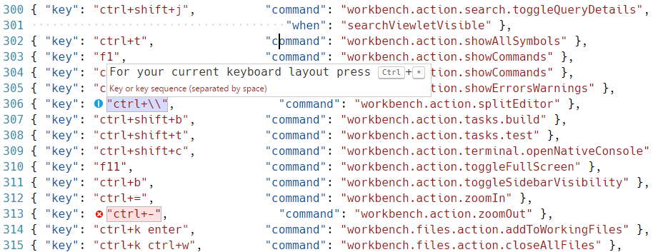

Visual Studio Code lets you perform most tasks directly from the keyboard. This page lists out the default bindings (keyboard shortcuts) and describes how you can update them.
Note: If you visit this page on a Mac, you will see the key bindings for the Mac. If you visit using Windows or Linux, you will see the keys for that platform. If you need the key binding for another platform, hover your mouse over the key you are interested in.
Keymap Extensions
Keyboard shortcuts are vital to productivity and changing keyboarding habits can be tough. To help with this, File > Preferences > Keymap Extensions shows you a list of popular keymap extensions. These extensions modify the VS Code shortcuts to match those of other editors so you don’t need to learn new keyboard shortcuts. There is also a Keymaps category of extensions in the Marketplace.
Tip: The extensions shown above are dynamically queried. Click on an extension tile above to read the description and reviews to decide which extension is best for you. See more in the Marketplace.
Keyboard Shortcuts Reference
We also have a printable version of these keyboard shortcuts. Help > Keyboard Shortcut Reference displays a condensed PDF version suitable for printing as an easy reference.
Below are links to the three platform-specific versions:
Basic Editing
Note: The following keys are rendered assuming a standard US keyboard layout. If you use a different keyboard layout, please read below.
| Key | Command | Command id |
|---|---|---|
| ⌘X (Windows, Linux Ctrl+X) | Cut line (empty selection) | editor.action.clipboardCutAction |
| ⌘C (Windows, Linux Ctrl+C) | Copy line (empty selection) | editor.action.clipboardCopyAction |
| ⇧⌘K (Windows, Linux Ctrl+Shift+K) | Delete Line | editor.action.deleteLines |
| ⌘Enter (Windows, Linux Ctrl+Enter) | Insert Line Below | editor.action.insertLineAfter |
| ⇧⌘Enter (Windows, Linux Ctrl+Shift+Enter) | Insert Line Above | editor.action.insertLineBefore |
| ⌥↓ (Windows, Linux Alt+Down) | Move Line Down | editor.action.moveLinesDownAction |
| ⌥↑ (Windows, Linux Alt+Up) | Move Line Up | editor.action.moveLinesUpAction |
| ⇧⌥↓ (Windows Shift+Alt+Down, Linux Ctrl+Shift+Alt+Down) | Copy Line Down | editor.action.copyLinesDownAction |
| ⇧⌥↑ (Windows Shift+Alt+Up, Linux Ctrl+Shift+Alt+Up) | Copy Line Up | editor.action.copyLinesUpAction |
| ⌘D (Windows, Linux Ctrl+D) | Add Selection To Next Find Match | editor.action.addSelectionToNextFindMatch |
| ⌘K ⌘D (Windows, Linux Ctrl+K Ctrl+D) | Move Last Selection To Next Find Match | editor.action.moveSelectionToNextFindMatch |
| ⌘U (Windows, Linux Ctrl+U) | Undo last cursor operation | cursorUndo |
| ⇧⌥I (Windows, Linux Shift+Alt+I) | Insert cursor at end of each line selected | editor.action.insertCursorAtEndOfEachLineSelected |
| ⇧⌘L (Windows, Linux Ctrl+Shift+L) | Select all occurrences of current selection | editor.action.selectHighlights |
| ⌘F2 (Windows, Linux Ctrl+F2) | Select all occurrences of current word | editor.action.changeAll |
| ⌘I (Windows, Linux Ctrl+I) | Select current line | expandLineSelection |
| ⌥⌘↓ (Windows Ctrl+Alt+Down, Linux Shift+Alt+Down) | Insert Cursor Below | editor.action.insertCursorBelow |
| ⌥⌘↑ (Windows Ctrl+Alt+Up, Linux Shift+Alt+Up) | Insert Cursor Above | editor.action.insertCursorAbove |
| ⇧⌘\ (Windows, Linux Ctrl+Shift+\) | Jump to matching bracket | editor.action.jumpToBracket |
| ⌘] (Windows, Linux Ctrl+]) | Indent Line | editor.action.indentLines |
| ⌘[ (Windows, Linux Ctrl+[) | Outdent Line | editor.action.outdentLines |
| Home | Go to Beginning of Line | cursorHome |
| End | Go to End of Line | cursorEnd |
| ⌘↓ (Windows, Linux Ctrl+End) | Go to End of File | cursorBottom |
| ⌘↑ (Windows, Linux Ctrl+Home) | Go to Beginning of File | cursorTop |
| ⌃PageDown (Windows, Linux Ctrl+Down) | Scroll Line Down | scrollLineDown |
| ⌃PageUp (Windows, Linux Ctrl+Up) | Scroll Line Up | scrollLineUp |
| ⌘PageDown (Windows, Linux Alt+PageDown) | Scroll Page Down | scrollPageDown |
| ⌘PageUp (Windows, Linux Alt+PageUp) | Scroll Page Up | scrollPageUp |
| ⌥⌘[ (Windows, Linux Ctrl+Shift+[) | Fold (collapse) region | editor.fold |
| ⌥⌘] (Windows, Linux Ctrl+Shift+]) | Unfold (uncollapse) region | editor.unfold |
| ⌘K ⌘[ (Windows, Linux Ctrl+K Ctrl+[) | Fold (collapse) all subregions | editor.foldRecursively |
| ⌘K ⌘] (Windows, Linux Ctrl+K Ctrl+]) | Unfold (uncollapse) all subregions | editor.unfoldRecursively |
| ⌘K ⌘0 (Windows, Linux Ctrl+K Ctrl+0) | Fold (collapse) all regions | editor.foldAll |
| ⌘K ⌘J (Windows, Linux Ctrl+K Ctrl+J) | Unfold (uncollapse) all regions | editor.unfoldAll |
| ⌘K ⌘C (Windows, Linux Ctrl+K Ctrl+C) | Add Line Comment | editor.action.addCommentLine |
| ⌘K ⌘U (Windows, Linux Ctrl+K Ctrl+U) | Remove Line Comment | editor.action.removeCommentLine |
| ⌘/ (Windows, Linux Ctrl+/) | Toggle Line Comment | editor.action.commentLine |
| ⇧⌥A (Windows Shift+Alt+A, Linux Ctrl+Shift+A) | Toggle Block Comment | editor.action.blockComment |
| ⌘F (Windows, Linux Ctrl+F) | Find | actions.find |
| ⌥⌘F (Windows, Linux Ctrl+H) | Replace | editor.action.startFindReplaceAction |
| ⌘G (Windows, Linux F3) | Find Next | editor.action.nextMatchFindAction |
| ⇧⌘G (Windows, Linux Shift+F3) | Find Previous | editor.action.previousMatchFindAction |
| ⌥Enter (Windows, Linux Alt+Enter) | Select All Occurrences of Find Match | editor.action.selectAllMatches |
| ⌥⌘C (Windows, Linux Alt+C) | Toggle Find Case Sensitive | toggleFindCaseSensitive |
| ⌥⌘R (Windows, Linux Alt+R) | Toggle Find Regex | toggleFindRegex |
| ⌥⌘W (Windows, Linux Alt+W) | Toggle Find Whole Word | toggleFindWholeWord |
| ⌃⇧M (Windows, Linux Ctrl+M) | Toggle Use of Tab Key for Setting Focus | editor.action.toggleTabFocusMode |
| Toggle Render Whitespace | toggleRenderWhitespace | |
| ⌥Z (Windows, Linux Alt+Z) | Toggle Word Wrap | editor.action.toggleWordWrap |
Rich Languages Editing
| Key | Command | Command id |
|---|---|---|
| ⌃Space (Windows, Linux Ctrl+Space) | Trigger Suggest | editor.action.triggerSuggest |
| ⇧⌘Space (Windows, Linux Ctrl+Shift+Space) | Trigger Parameter Hints | editor.action.triggerParameterHints |
| ⇧⌥F (Windows Shift+Alt+F, Linux Ctrl+Shift+I) | Format Document | editor.action.formatDocument |
| ⌘K ⌘F (Windows, Linux Ctrl+K Ctrl+F) | Format Selection | editor.action.formatSelection |
| F12 | Go to Definition | editor.action.goToDeclaration |
| ⌥F12 (Windows Alt+F12, Linux Ctrl+Shift+F10) | Peek Definition | editor.action.previewDeclaration |
| ⌘K F12 (Windows, Linux Ctrl+K F12) | Open Definition to the Side | editor.action.openDeclarationToTheSide |
| ⌘. (Windows, Linux Ctrl+.) | Quick Fix | editor.action.quickFix |
| ⇧F12 (Windows, Linux Shift+F12) | Show References | editor.action.referenceSearch.trigger |
| F2 | Rename Symbol | editor.action.rename |
| ⇧⌘. (Windows, Linux Ctrl+Shift+.) | Replace with Next Value | editor.action.inPlaceReplace.down |
| ⇧⌘, (Windows, Linux Ctrl+Shift+,) | Replace with Previous Value | editor.action.inPlaceReplace.up |
| ⌃⇧⌘→ (Windows, Linux Shift+Alt+Right) | Expand AST Select | editor.action.smartSelect.grow |
| ⌃⇧⌘← (Windows, Linux Shift+Alt+Left) | Shrink AST Select | editor.action.smartSelect.shrink |
| ⌘K ⌘X (Windows, Linux Ctrl+K Ctrl+X) | Trim Trailing Whitespace | editor.action.trimTrailingWhitespace |
| ⌘K M (Windows, Linux Ctrl+K M) | Change Language Mode | workbench.action.editor.changeLanguageMode |
Navigation
| Key | Command | Command id |
|---|---|---|
| ⌘T (Windows, Linux Ctrl+T) | Show All Symbols | workbench.action.showAllSymbols |
| ⌃G (Windows, Linux Ctrl+G) | Go to Line… | workbench.action.gotoLine |
| ⌘P (Windows, Linux Ctrl+P) | Go to File…, Quick Open | workbench.action.quickOpen |
| ⇧⌘O (Windows, Linux Ctrl+Shift+O) | Go to Symbol… | workbench.action.gotoSymbol |
| ⇧⌘M (Windows, Linux Ctrl+Shift+M) | Show Problems | workbench.actions.view.problems |
| F8 | Go to Next Error or Warning | editor.action.marker.next |
| ⇧F8 (Windows, Linux Shift+F8) | Go to Previous Error or Warning | editor.action.marker.prev |
| ⇧⌘P (Windows, Linux Ctrl+Shift+P) | Show All Commands | workbench.action.showCommands |
| ⌃⇧Tab (Windows, Linux Ctrl+Shift+Tab) | Navigate Editor Group History | workbench.action.openPreviousRecentlyUsedEditorInGroup |
| ⌃- (Windows Alt+Left, Linux Ctrl+Alt+-) | Go Back | workbench.action.navigateBack |
| ⌃⇧- (Windows Alt+Right, Linux Ctrl+Shift+-) | Go Forward | workbench.action.navigateForward |
Editor/Window Management
| Key | Command | Command id |
|---|---|---|
| ⇧⌘N (Windows, Linux Ctrl+Shift+N) | New Window | workbench.action.newWindow |
| ⇧⌘W (Windows Ctrl+W, Linux Ctrl+Shift+W) | Close Window | workbench.action.closeWindow |
| ⌘W (Windows Ctrl+F4, Linux Ctrl+W) | Close Editor | workbench.action.closeActiveEditor |
| ⌘K F (Windows, Linux Ctrl+K F) | Close Folder | workbench.action.closeFolder |
| Cycle Between Editor Groups | workbench.action.navigateEditorGroups | |
| ⌘\ (Windows, Linux Ctrl+\) | Split Editor | workbench.action.splitEditor |
| ⌘1 (Windows, Linux Ctrl+1) | Focus into Left Editor Group | workbench.action.focusFirstEditorGroup |
| ⌘2 (Windows, Linux Ctrl+2) | Focus into Side Editor Group | workbench.action.focusSecondEditorGroup |
| ⌘3 (Windows, Linux Ctrl+3) | Focus into Right Editor Group | workbench.action.focusThirdEditorGroup |
| ⌘K ⌘← (Windows, Linux Ctrl+K Ctrl+Left) | Focus into Editor Group on the Left | workbench.action.focusPreviousGroup |
| ⌘K ⌘→ (Windows, Linux Ctrl+K Ctrl+Right) | Focus into Editor Group on the Right | workbench.action.focusNextGroup |
| ⌘K ⇧⌘← (Windows, Linux Ctrl+Shift+PageUp) | Move Editor Left | workbench.action.moveEditorLeftInGroup |
| ⌘K ⇧⌘→ (Windows, Linux Ctrl+Shift+PageDown) | Move Editor Right | workbench.action.moveEditorRightInGroup |
| ⌘K ← (Windows, Linux Ctrl+K Left) | Move Active Editor Group Left | workbench.action.moveActiveEditorGroupLeft |
| ⌘K → (Windows, Linux Ctrl+K Right) | Move Active Editor Group Right | workbench.action.moveActiveEditorGroupRight |
File Management
| Key | Command | Command id |
|---|---|---|
| ⌘N (Windows, Linux Ctrl+N) | New File | workbench.action.files.newUntitledFile |
| Ctrl+O | Open File… | workbench.action.files.openFile |
| ⌘S (Windows, Linux Ctrl+S) | Save | workbench.action.files.save |
| ⌥⌘S (Windows, Linux ) | Save All | workbench.action.files.saveAll |
| ⇧⌘S (Windows, Linux Ctrl+Shift+S) | Save As… | workbench.action.files.saveAs |
| ⌘W (Windows Ctrl+F4, Linux Ctrl+W) | Close | workbench.action.closeActiveEditor |
| ⌥⌘T (Windows, Linux ) | Close Others | workbench.action.closeOtherEditors |
| ⌘K W (Windows, Linux Ctrl+K W) | Close Group | workbench.action.closeEditorsInGroup |
| Close Other Groups | workbench.action.closeEditorsInOtherGroups | |
| Close Group to Left | workbench.action.closeEditorsToTheLeft | |
| Close Group to Right | workbench.action.closeEditorsToTheRight | |
| ⌘K ⌘W (Windows, Linux Ctrl+K Ctrl+W) | Close All | workbench.action.closeAllEditors |
| ⇧⌘T (Windows, Linux Ctrl+Shift+T) | Reopen Closed Editor | workbench.action.reopenClosedEditor |
| ⌘K Enter (Windows, Linux Ctrl+K Enter) | Keep Open | workbench.action.keepEditor |
| ⌃Tab (Windows, Linux Ctrl+Tab) | Open Next | workbench.action.openNextRecentlyUsedEditorInGroup |
| ⌃⇧Tab (Windows, Linux Ctrl+Shift+Tab) | Open Previous | workbench.action.openPreviousRecentlyUsedEditorInGroup |
| ⌘K P (Windows, Linux Ctrl+K P) | Copy Path of Active File | workbench.action.files.copyPathOfActiveFile |
| ⌘K R (Windows, Linux Ctrl+K R) | Reveal Active File in Windows | workbench.action.files.revealActiveFileInWindows |
| ⌘K O (Windows, Linux Ctrl+K O) | Show Opened File in New Window | workbench.action.files.showOpenedFileInNewWindow |
| Compare Opened File With | workbench.files.action.compareFileWith |
Display
| Key | Command | Command id |
|---|---|---|
| ⌃⌘F (Windows, Linux F11) | Toggle Full Screen | workbench.action.toggleFullScreen |
| ⌘K Z (Windows, Linux Ctrl+K Z) | Toggle Zen Mode | workbench.action.toggleZenMode |
| Escape Escape | Leave Zen Mode | workbench.action.exitZenMode |
| ⌘= (Windows, Linux Ctrl+=) | Zoom in | workbench.action.zoomIn |
| ⌘- (Windows, Linux Ctrl+-) | Zoom out | workbench.action.zoomOut |
| ⌘Numpad0 (Windows, Linux Ctrl+Numpad0) | Reset Zoom | workbench.action.zoomReset |
| ⌘B (Windows, Linux Ctrl+B) | Toggle Sidebar Visibility | workbench.action.toggleSidebarVisibility |
| ⇧⌘E (Windows, Linux Ctrl+Shift+E) | Show Explorer / Toggle Focus | workbench.view.explorer |
| ⇧⌘D (Windows, Linux Ctrl+Shift+D) | Show Debug | workbench.view.debug |
| ⌃⇧G (Windows, Linux Ctrl+Shift+G) | Show Git | workbench.view.git |
| ⇧⌘X (Windows, Linux Ctrl+Shift+X) | Show Extensions | workbench.view.extensions |
| ⇧⌘U (Windows Ctrl+Shift+U, Linux Ctrl+K Ctrl+H) | Show Output | workbench.action.output.toggleOutput |
| ⌃Q (Windows Ctrl+Q, Linux ) | Quick Open View | workbench.action.quickOpenView |
| ⇧⌘F (Windows, Linux Ctrl+Shift+F) | Show Search | workbench.view.search |
| ⇧⌘H (Windows, Linux Ctrl+Shift+H) | Replace in Files | workbench.action.replaceInFiles |
| ⇧⌘J (Windows, Linux Ctrl+Shift+J) | Toggle Search Details | workbench.action.search.toggleQueryDetails |
| ⇧⌘C (Windows, Linux Ctrl+Shift+C) | Open New Command Prompt | workbench.action.terminal.openNativeConsole |
| ⇧⌘V (Windows, Linux Ctrl+Shift+V) | Toggle Markdown Preview | markdown.showPreview |
| ⌘K V (Windows, Linux Ctrl+K V) | Open Preview to the Side | markdown.showPreviewToSide |
| ⌃` (Windows, Linux Ctrl+`) | Toggle Integrated Terminal | workbench.action.terminal.toggleTerminal |
Preferences
| Key | Command | Command id |
|---|---|---|
| ⌘, (Windows, Linux ) | Open User Settings | workbench.action.openGlobalSettings |
| Open Workspace Settings | workbench.action.openWorkspaceSettings | |
| ⌘K ⌘S (Windows, Linux Ctrl+K Ctrl+S) | Open Keyboard Shortcuts | workbench.action.openGlobalKeybindings |
| Open User Snippets | workbench.action.openSnippets | |
| ⌘K ⌘T (Windows, Linux Ctrl+K Ctrl+T) | Select Color Theme | workbench.action.selectTheme |
| Configure Display Language | workbench.action.configureLocale |
Debug
| Key | Command | Command id |
|---|---|---|
| F9 | Toggle Breakpoint | editor.debug.action.toggleBreakpoint |
| F5 | Start, Continue | workbench.action.debug.continue |
| ⌘F5 (Windows, Linux Ctrl+F5) | Start (without debugging) | workbench.action.debug.run |
| F6 | Pause | workbench.action.debug.pause |
| F11 | Step Into | workbench.action.debug.stepInto |
| ⇧F11 (Windows, Linux Shift+F11) | Step Out | workbench.action.debug.stepOut |
| F10 | Step Over | workbench.action.debug.stepOver |
| ⇧F5 (Windows, Linux Shift+F5) | Stop | workbench.action.debug.stop |
| ⌘K ⌘I (Windows, Linux Ctrl+K Ctrl+I) | Show Hover | editor.action.showHover |
Tasks
| Key | Command | Command id |
|---|---|---|
| ⇧⌘B (Windows, Linux Ctrl+Shift+B) | Run Build Task | workbench.action.tasks.build |
| Run Test Task | workbench.action.tasks.test |
Extensions
| Key | Command | Command id |
|---|---|---|
| Install Extension | workbench.extensions.action.installExtension | |
| Show Installed Extensions | workbench.extensions.action.showInstalledExtensions | |
| Show Outdated Extensions | workbench.extensions.action.listOutdatedExtensions | |
| Show Recommended Extensions | workbench.extensions.action.showRecommendedExtensions | |
| Show Popular Extensions | workbench.extensions.action.showPopularExtensions | |
| Update All Extensions | workbench.extensions.action.updateAllExtensions |
Customizing Shortcuts
All keyboard shortcuts in VS Code can be customized via the User/keybindings.json file.
- To configure keyboard shortcuts the way you want, go to the menu under File > Preferences > Keyboard Shortcuts. (Code > Preferences > Keyboard Shortcuts on Mac)
- This will open the
Default Keyboard Shortcutson the left and yourUser/keybindings.jsonfile where you can overwrite the default bindings on the right. - The list above isn’t exhaustive. More commands may be listed under “Here are other available commands” in
Default Keyboard Shortcuts.
Keyboard Rules
The keyboard shortcuts dispatching is done by analyzing a list of rules that are expressed in JSON. Here are some examples:
|
Each rule consists of:
- a
keythat describes the pressed keys. - a
commandcontaining the identifier of the command to execute. - an optional
whenclause containing a boolean expression that will be evaluated depending on the current context.
Chords (two separate keypress actions) are described by separating the two keypresses with a space. E.g.: ctrl+k ctrl+c.
When a key is pressed:
- the rules are evaluated from bottom to top.
- the first rule that matches, both the
keyand in terms ofwhen, is accepted. - no more rules are processed.
- if a rule is found and has a
commandset, thecommandis executed.
The additional User/keybindings.json rules are appended at runtime to the bottom of the default rules, thus allowing them to overwrite the default rules. The User/keybindings.json file is watched by VS Code so editing it while VS Code is running will update the rules at runtime.
Accepted keys
The key is made up of modifiers and the key itself.
The following modifiers are accepted:
| Platform | Modifiers |
|---|---|
| Mac | ctrl+, shift+, alt+, cmd+ |
| Windows | ctrl+, shift+, alt+, win+ |
| Linux | ctrl+, shift+, alt+, meta+ |
The following keys are accepted:
- f1-f19, a-z, 0-9
- `, -, =, [, ], \, ;, ', ,, ., /
- left, up, right, down, pageup, pagedown, end, home
- tab, enter, escape, space, backspace, delete
- pausebreak, capslock, insert
- numpad0-numpad9, numpad_multiply, numpad_add, nupad_separator
- numpad_subtract, numpad_decimal, numpad_divide
when Clause Contexts
VS Code gives you fine control over when your key bindings are enabled through the optional when clause. If you key binding doesn’t have a when clause, the key binding is globally available at all times.
Below are the some of the possible when clause contexts which evaluate to Boolean true/false:
| Context name | True when |
|---|---|
| Editor contexts | |
| editorFocus | An editor has focus, either the text or a widget. |
| editorTextFocus | The text in an editor has focus (cursor is blinking). |
| editorHasSelection | Text is selected in the editor. |
| editorHasMultipleSelections | Multiple regions of text are selected (multiple cursors). |
| editorReadOnly | The editor is read only. |
| editorLangId | True when the editor’s associated language Id matches. Example: "editorLangId == typescript". |
| textCompareEditorVisible | Diff (compare) view is visible. |
| Mode contexts | |
| inDebugMode | A debug session is running. |
| inSnippetMode | The editor is in snippet mode. |
| inQuickOpen | The Quick Open dropdown has focus. |
| Editor widget contexts | |
| findWidgetVisible | Editor Find widget is visible. |
| suggestWidgetVisible | Suggestion widget (IntelliSense) is visible. |
| suggestWidgetMultipleSuggestions | Multiple suggestions are displayed. |
| renameInputVisible | Rename input text box is visible. |
| referenceSearchVisible | Find All References peek window is open. |
| inReferenceSearchEditor | The Find All References peek window editor has focus. |
| config.editor.stablePeek | Keep peek editors open (controlled by editor.stablePeek setting). |
| quickFixWidgetVisible | Quick Fix widget is visible. |
| parameterHintsVisible | Parameter hints are visible (controlled by editor.parameterHints setting). |
| parameterHintsMultipleSignatures | Multiple parameter hints are displayed. |
| Integrated terminal contexts | |
| terminalFocus | An integrated terminal has focus. |
| Global UI contexts | |
| resourceLangId | True when the Explorer or editor title language Id matches. Example: "resourceLangId == markdown" |
| globalMessageVisible | Message box is visible at the top of VS Code. |
| searchViewletVisible | Search view is open. |
| replaceActive | Search view Replace text box is open. |
The list above isn’t exhaustive and you may see some when contexts for specific VS Code UI in the Default Keyboard Shortcuts.
Removing a specific key binding rule
You can write a key binding rule that targets the removal of a specific default key binding. With the keybindings.json, it was always possible to redefine all the key bindings of VS Code, but it can be very difficult to make a small tweak, especially around overloaded keys, such as Tab or Escape. To remove a specific key binding, simply add a - to the command and the rule will be a removal rule.
Here is an example:
|
Keyboard layouts
Note: This section relates only to key bindings, not to typing in the editor.
The keys above are string representations for virtual keys and do not necessarily relate to the produced character when they are pressed. More precisely:
- Reference: https://msdn.microsoft.com/en-us/library/windows/desktop/dd375731(v=vs.85)
- tab for
VK_TAB(0x09) - ; for
VK_OEM_1(0xBA) - = for
VK_OEM_PLUS(0xBB) - , for
VK_OEM_COMMA(0xBC) - - for
VK_OEM_MINUS(0xBD) - . for
VK_OEM_PERIOD(0xBE) - / for
VK_OEM_2(0xBF) - ` for
VK_OEM_3(0xC0) - [ for
VK_OEM_4(0xDB) - \ for
VK_OEM_5(0xDC) - ] for
VK_OEM_6(0xDD) - ' for
VK_OEM_7(0xDE) - etc.
Different keyboard layouts usually reposition the above virtual keys or change the characters produced when they are pressed. When using a different keyboard layout than the standard US, Visual Studio Code does the following:
All the key bindings are rendered in the UI using the current system’s keyboard layout. For example, Split Editor when using a French (France) keyboard layout is now rendered as Ctrl+*:

When editing keybindings.json, VS Code highlights misleading key bindings - those that are represented in the file with the character produced under the standard US keyboard layout, but which need pressing keys with different labels under the current system’s keyboard layout. For example, here is how the Default keybindings rules look like when using a French (France) keyboard layout:

There is also a widget that helps input the key binding rule when editing keybindings.json. To launch the Define Keybinding widget, press ⌘K ⌘K (Windows, Linux Ctrl+K Ctrl+K). The widget listens for key presses and renders the serialized JSON representation in the text box and below it, the keys that VS Code has detected under your current keyboard layout. Once you’ve typed the key combination you want, you can press Enter and a rule snippet will be inserted.

Note: Visual Studio Code detects your current keyboard layout on start-up and then caches this information. For a good experience, we recommend restarting VS Code if you change your keyboard layout.
Next Steps
Now that you know about our Key binding support, what’s next…
- Customization - Configure Code the way you want - Themes, Settings and more
- Language Support - Our Good, Better, Best language grid to see what you can expect
- Debugging - This is where VS Code really shines
- Node.js - End to end Node.js scenario with a sample app
Common Questions
Q: How to find out what command is bound to a specific key?
A: In the Default Keyboard Shortcuts, open Quick Outline by pressing ⇧⌘O (Windows, Linux Ctrl+Shift+O)
Q: How to add a key binding to an action? E.g. Add Ctrl+D to Delete Lines
A: Find a rule that triggers the action in the Default Keyboard Shortcuts and write a modified version of it in your User/keybindings.json file:
|
Q: How can I add a key binding for only certain file types?
A: Use the editorLangId context key in your when clause:
|
Q: I have modified my key bindings in User/keybindings.json, why don’t they work?
A: The most common problem is a syntax error in the file. Otherwise, try removing the when clause or picking a different key. Unfortunately, at this point, it is a trial and error process.